15.5. 2-mic hybrid通话调试指引
Version |
Date |
Notes |
|---|---|---|
V1.0 |
2024-01-15 |
初始版本 |
点击跳转 通话算法节点配置说明
15.5.1. DMS简述
DMS是指2mic降噪技术，是通过双麦克风阵列，精准计算通话者说话的方位，在保护主方向目标语音的同时，去除环境中的各种干扰噪声，例如其他人的讲话声、交通工具产生的噪音、风噪声等等，给到远端接听的人以清晰语音
顺便提一下，ANC和ENC的区别：
ANC（Active Noise Cancellation，主动降噪）耳机系统通过麦克风采集环境噪声，并将此噪声反相叠加到喇叭端，人耳听到的是相位相反的两种噪声叠加结果，于是达到了消噪的目的。
ANC的受益人是耳机使用者本人，通过ANC功能，让用户自己减少受到环境噪声的影响。
ENC的受益人是通话的另一方，通过ENC功能，减少环境噪声对通话的影响，让对方听到清晰语音。
ANC让自己听感环境更加安静，ENC让通话的另一端听感环境更加安静。
1.双MIC降噪数据处理流程如下：
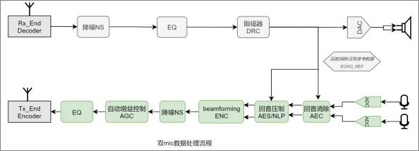
注：降噪NS模块，可以选择传统降噪ANS，也可以选择神经网络降噪DNS，二选一。
2.以下是对于端对端通话过程远端和近端的定义，本手册涉及的远端近端概念，遵照以下框图。
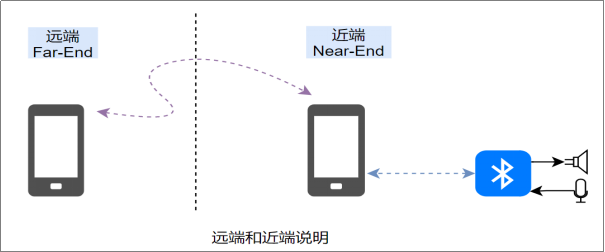
我们讨论的回音，是指远端手机讲话，发送到连接蓝牙设备的近端手机，然后声音从蓝牙设备的speaker发出来，又被蓝牙设备的microphone采集到，通过近端手机发送回远端手机，远端可以延时听到自己讲话的声音。
15.5.2. 双麦HYBRID开发设计要点
15.5.2.1. 概述
双麦系统包含2个麦：TALK MIC和FB MIC
TALK MIC : 可正常录取人数和环境声的用于通话的主麦克风，一般是ANC系统中的FF MIC
FB MIC：一般是指ANC系统中的FB MIC，封于喇叭腔体内，腔体上没有拾音孔
双麦HYBRID是基于FB MIC没有拾音孔，采集到很少的环境声，集合TALK MIC来处理大环境噪声，例如风噪，地铁环境声。
15.5.2.2. Microphone选型规格
Microphone选型规格 |
|
|---|---|
数量 |
2个模拟MIC |
方向性 |
全指向性 |
信噪比 |
>=62dB(A) |
相位 |
±10°@100-7kHz |
15.5.3. 双麦ENC参数与调试指引
15.5.3.1. 生成传递函数配置
1、在配置工具的通话参数配置界面点击”3 mic Analysis”按钮打开分析工具 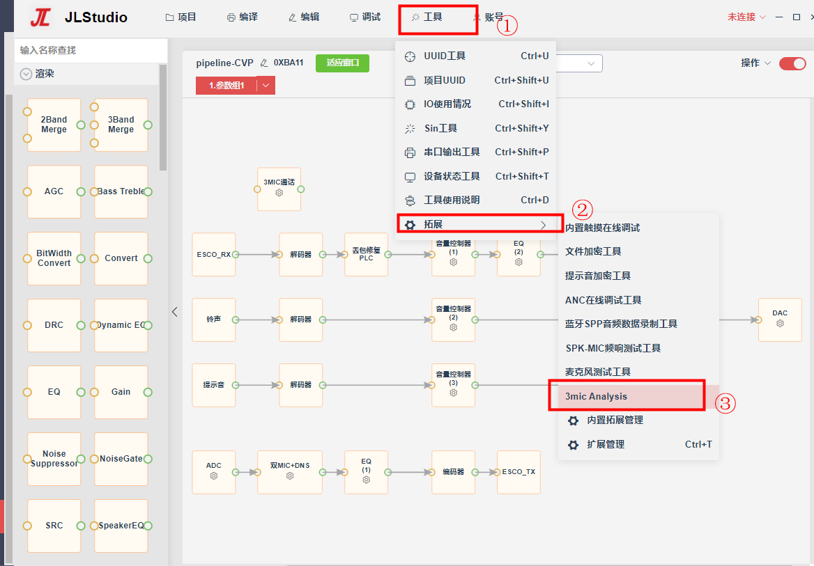
2、工具界面如下：
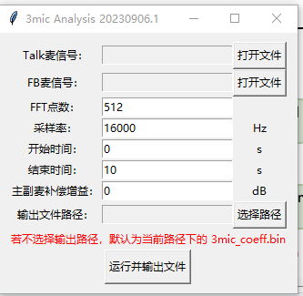（1）Talk麦信号
主麦的声音信号，要求真实人耳佩戴，正常说话时，Talk麦和FB麦同时录制的声音
（2）FB麦信号
FB麦的声音信号，要求真实人耳佩戴，正常说话时，Talk麦和FB麦同时录制的声音
（3）FFT点数
固定512点
（4）采样率，单位：Hz
固定16000Hz
（5）开始时间，单位：s
需要分析的数据的起始时间，默认0s
（6）结束时间，单位：s
需要分析的数据的结束时间，默认10s
（7）主副麦补偿增益，单位dB
如果主副麦数据送到算法前做了数字放大，放大的dB需要填到这里，默认0dB
（8）输出文件名字：dms_hybrid.bin
（名字固定不可修改）3、将生成的dms_hybrid.bin文件放到下载目录，通过download.bat的-res参数把文件烧写到芯片里面
调试指引
15.5.3.2. 配套工具
（1）安卓手机apk：audio_tools(“AudioTools使用手册/记录”章节) （2）PC音频录制工具（内置于“杰理SDK工具->拓展->蓝牙spp音频数据录制工具”）
15.5.3.3. SDK配置
打开数据导出宏定义
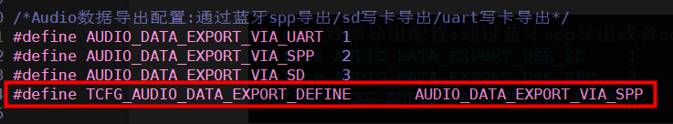
15.5.3.4. 在线调试
使用audio_tools在线调试ENC参数，感受实时效果
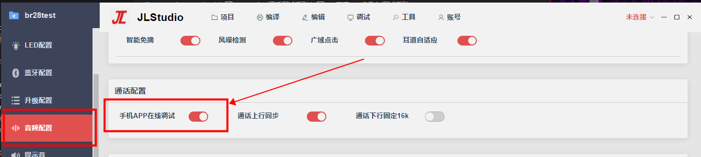
15.5.4. HYBRID模块
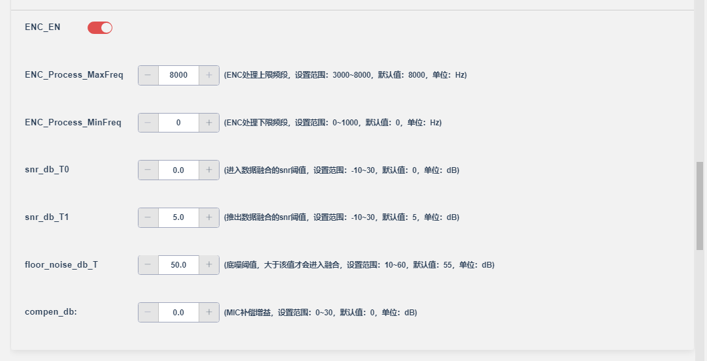
ENC_Process_MaxFreq : 处理频率上限,设定范围（3000~8000），默认8000
ENC_Process_MinFreq : 处理频率下限，设定范围（0~1000），默认为0
Enter_Mix_Threshold ：进入数据融合的SNR阈值，单位（dB），默认0dB
Exit_Mix_Threshold : 退出数据融合的SNR阈值，单位（dB），默认5dB，一般设定Exit_Mix_Threshold >= Enter_Mix_Threshold + 5
NoiseFloor_Threshold : 底噪阈值，大于该值才会进入融合
Compensation ：对输入数据进行补偿，单位（dB），默认为12dB，如果经过agc出来幅度还是小,可以尝试适当改大该值
15.5.5. AEC模块
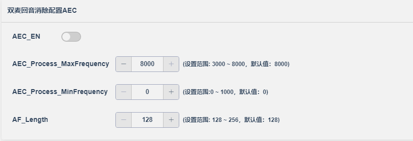
注1：双mic降噪ENC默认需要打开AEC模块。
注2：AEC模块的参数基本不用调试，这里是为了兼容性考虑，所以放到配置工具。如有需要，由原开发人员指导修改
15.5.6. NLP模块
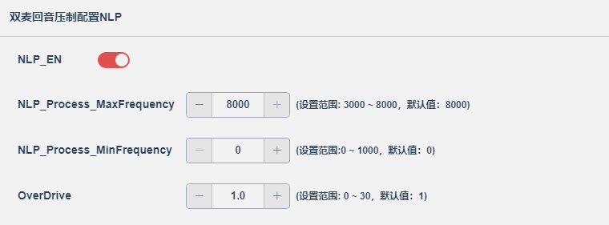 NLP_Process_MaxFrequency : 处理频率上限 NLP_Process_MinFrequency : 处理频率下限 OverDrive ：影响回声压制系数计算，数值越大压制则越强，当值为0的时候则无任何回声压制作用。
15.5.7. 神经网络降噪DNS
神经网络降噪：收集大规模的干净语音和噪声数据集， 提取干净语音特征和带噪声语音特征，采用深度神经网络技术进行降噪模型的训练。训练出的降噪模型对输入信号实时进行噪声和语音的分类和回归，根据分类和回归的结果对语音信号进行噪声抑制，语音增强，提升信噪比。 对比传统降噪算法，采用深度神经网络进行语音降噪和增强，噪声估计更准确，语音失真更小，同时也能适应非平稳噪声的降噪处理。
优点 |
缺点 |
|
|---|---|---|
ANS |
对平稳噪声处理效果好，对ram和mips要求低 |
适应性差，对动态噪声处理效果欠佳 |
DNS |
噪声估计准确，语音保真度高，适应性好 |
对ram和mips要求高 |
15.5.7.1. 通用参数说明
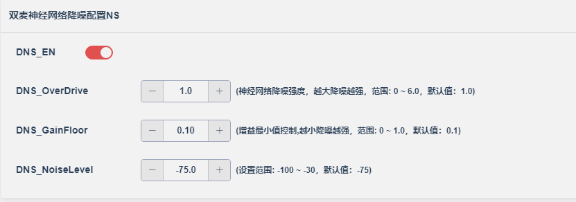
DNS_GainFloor : 增益平滑系数，该系数主要用于控制降噪增益最小值。如果降噪后底噪较大，可以适当减小该值；如果出现吃音问题，可以适当提高该值，建议设定范围：0.05 ~ 0.3。
DNS_OverDrive : 降噪强度控制，DNS_OverDrive=1为降噪中间值，即算法评估出来的降噪强度。大于1的时候，即为加强降噪强度，小于1的时候，即为降低降噪强度，建议调节范围：0.2 ~ 3 。
NoiseLevel ：初始噪声水平。用来加速降噪收敛，跟mic信号的信噪比有关。Mic信号信噪比高，该值可以小一点，反之则需要稍微大一点。如果初始噪声设置过高，则可能导致一开始声音比较小声，如果过小，可能降噪收敛加速不明显。所以这个值需要具体方案如果出现以上可能问题时，适当修改。
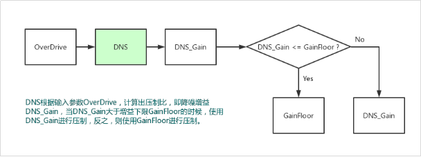
15.5.8. AGC模块
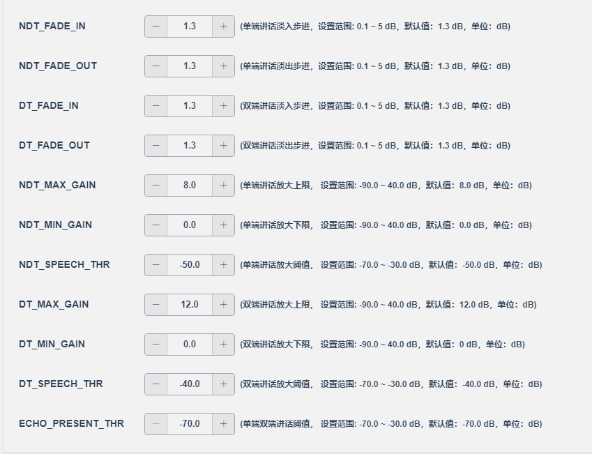
AGC调试的是远端听到的声音。即mic采集到的人声传到远端手机端的声音大小。该模块是后级数字模块，即在一定的mic模拟增益的情况下，做完回音消除处理后，准备送到远端之前做的一个数字放大AGC。所以它只影响声音的大小。流程如下：
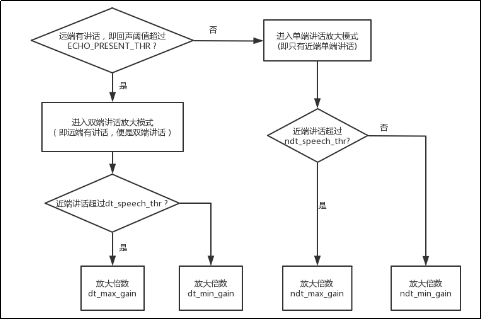
调试指引：
(1)增益单位是dB
(2)当mic采集到的数据人声大于speech_thr（近端声音放大的阈值）时放大MAX_GAIN
(3)当mic采集到的数据人声小于等于speech_thr（近端声音放大的阈值）时放大MIN_GAIN
(4)最大放大倍数和最小放大倍数之间，是通过fade_in和fade_out来淡入淡出的。比如单端讲话，这个时候淡入的步进就是：ndt_fade_in，淡出的步进就是：ndt_fade_out。讲话的时候淡入，没说话的时候淡出。双端讲话则用dt_fade_in和dt_fade_out，用法一样。
(5)speech_thr（近端声音放大的阈值）这个值根据mic采到的声音大小而定，如果太大，声音得不到均匀放大，即一会 放大max_gain，一会放大min_gain，听起来有可能忽大忽小。太小则有可能环境声也会一并放大。
(6)使用AGC模块实现单工通话功能 在某些情况下，整个通话回路产生了严重失真，导致算法无法处理好回音，这个时候，就只能选择单工的通话方式。 所谓单工，即远端讲话的时候，听不到近端的声音，远端不讲话，可以听到近端的声音。而近端，什么时候都可以听到远端的声音。所以可以在检测到远端有说话，就开始将近端声音淡出，远端没说话，再自行淡入，就可以实现单工功能。 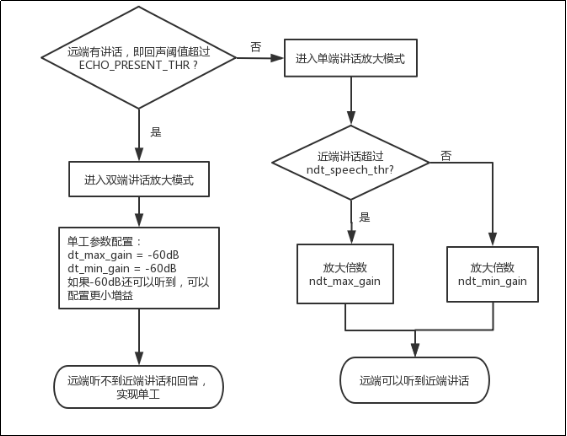
【注意】ECHO_PRESENT_THR 的值，决定什么时候进入单工处理。考虑到远端讲话的声音一般是比较大的，所以可以适当将该值设置高一点，避免远端环境声或者其他非目标声音稍微一大，就听不到近端声音。比如：远端过来的目标人声集中在-20dB到-40dB之间，则可以把ECHO_PRESENT_THR设置成-45dB。但是也要注意不能设置太大，太大会导致远端说话有些字达不到设定阈值，从而进入不了双端讲话模式，实现不了单工，出现漏回音的情况。
15.5.9. JLSP-AGC模块
3MIC通话算法支持配置工具选择新版的AGC算法，参数如下： 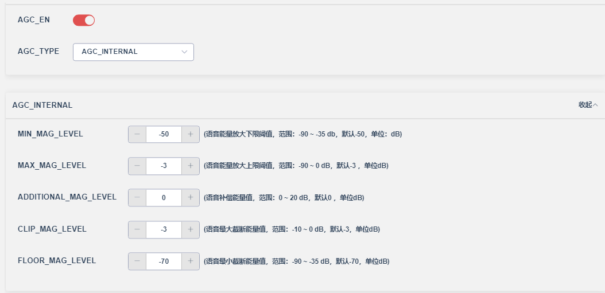
MIN_MAG_LEVEL : 语音能量放大下限阈值（单位dB,默认-50，范围（-90dB~-35dB）） MAX_MAG_LEVEL： 语音能量放大上限阈值（单位dB,默认-3，范围（-90dB~0dB）） ADDITIONAL_MAG_LEVEL： 语音补偿能量值（单位dB,默认0，范围（0dB~20dB）） CLIP_MAG_LEVEL ： 语音最大截断能量值（单位dB,默认-3，范围（-10dB~0dB）） FLOOR_MAG_LEVEL ： 语音最小截断能量值（单位dB,默认-70，范围（-90dB~-35dB））
基本原理：算法会对语音进行动态增益调整，调整的过程如果语音小于MAX_MAG_LEVEL时，则将语音压制到FLOOR_MAG_LEVEL大小，如果语音大于MAX_MAG_LEVEL时，则将语音压制到CLIP_MAG_LEVEL大小；ADDITIONAL_MAG_LEVEL是对语音进行额外的增益补偿。
15.5.9.1. 常见问题调试指引
15.5.9.1.1. 出现吃音或者一句话某个字某个字变得很小声问题
出现该问题时，首先要确认所处环境是不是信噪比很低(如小于-5dB)，即噪声比人声大很多，这种情形下，优化空间有限，调试步骤如下：
步骤1：通过调节mic的增益来缓解：如果mic的增益比较小(小于10dB)，可以适当提高mic增益来缓解吃音问题，建议调节范围不要超过15dB；提高mic增益可能会导致噪声增大，据实际情况调节。
步骤2：调节DNS_GainFloor和DNS_OverDrive参数：适当提高DNS_GainFloor 或 适当减小 DNS_OverDrive，可以通过配合gain_floor和over_drive适度调节。
15.5.9.1.2. 远端听到声音不均匀，忽大忽小
如果后处理开启了AGC模块，出现该问题时，请参照“章节十：常见问题FAQ”第二个问题进行确认调整。
15.5.10. WNC风噪检测模块
15.5.10.1. 参数说明
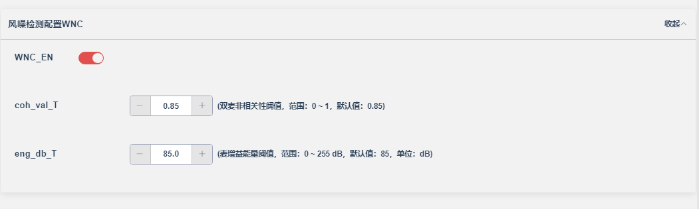
WN_Correlation_Threshold：双麦非相关性阈值，根据双麦采集到的音频相关性取值，相关性越小取值越大，取值范围（0~1），默认取值0.85
WN_Detect_Threshold：麦增益能量阈值，大于该阈值才会进入风噪检测，默认设定为85dB，需要根据实际风噪做确定；
确定方法如下：如果需要在大于3m/s风速下做降风噪，需要用样机在3m/s的实际环境下测试，使用int JLSP_DmsHybridSystem_Process(void* handle, short* near, short* fb_in, shortfar, short out, int Batch)接口实时获取当前的风噪强度，把这个风噪强度的均值填给eng_db_T。
注意：有无风是由coh_val_T和ng_db_T两个参数共同决定的。
15.5.11. EQ参数
考虑到有些MIC物理特性，或者腔体声学设计缺陷，导致MIC采集到的声音比较低沉，这种情况可以适当的对声音做EQ处理。通话的EQ通常最多3段，就可以基本满足需求。具体什么EQ参数合适，根据实际情景进行配置。场景情景如下：
情景1：声音低沉，闷，不够透亮
（1）适当提高MIC的模拟增益
（2）使用high-pass的滤波器做简单的处理，低频适当衰减。
情景2：声音听起来有唇齿音 如果使用msbc，有些mic灵敏度比较高，MIC可以采到6.8k左右的唇齿音，如果介意，这个时候可以做一个high-shelf的滤波器处理。
15.5.12. 通话调试常见问题Q&A
15.5.12.1. 有噪声或者电流声
关闭回音消除，听mic的原始声音是否有噪声或者电流声，如果有，则优先处理源头的噪声,因为干扰声会 严重影响通话效果。可以做以下尝试： （1）通话的时候切换成LDO （2）降低发射功率 如果以上操作无效，再检查pcb是否合理
15.5.12.2. 声音忽大忽小，不均匀
（1）AGC放大参数是否合理（详细参考本文档“AGC参数”章节） 由于不同的mic灵敏度不一样，这里可以讲max_gain和min_gain设置成一样，确认是否是AGC原因： 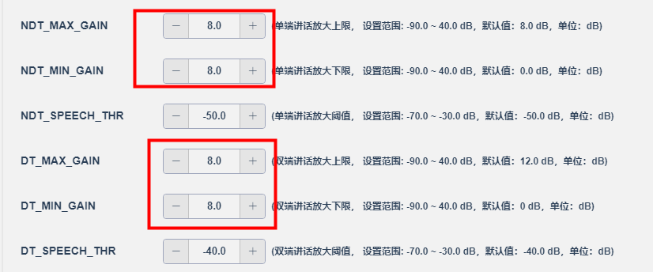
改完如果正常，则逐步加小相应的阈值SPEECH_THR，小于该阈值的当成噪声不放大。或者缩小MaxGain和MinGain的差值，优化声音在两个增益之间过度淡入淡出带来的不均匀效果。 改完依旧不正常可能是“ANS参数设置不合理”。 （2）ANS参数是否合理 如果mic本身（或者由于电路干扰）采到的声音信噪比比较低，经过降噪模块，则可能会损耗比较多的人声部分，说话小声的部分会变得比较小声。这个时候可以参数减弱ANS的强度，优先调ANS_Suppress，步进不要超过0.1。注意不要调太弱，降噪太弱，声音听起来也会不那么干净。 如果当前没有回音问题，也可以尝试提高一些mic的增益，提高声音信噪比，提高ANS的降噪空间，再尝试通话，根据文档解决剩下的问题。
15.5.12.3. 回音消不掉
（1）使能AEC的所有模块
（2）硬件检查
查看各个电源配置电压差是否满足要求，
排查是不是硬件干扰过去的回音:可以将喇叭or麦换成等效电阻，AEC_MODE选择disable，如果这时候还存在回声，可能回音有部分来自于硬件的电路干扰，严重程度听回音大小。 如果暂时无法修改硬件环境，可通过降低DAC增益或者MIC增益，减小回音程度。
15.5.12.4. 远端听到的声音比较闷，不清晰
（1）确认麦的供电是否满足要求 具体查看的麦对应的datasheet关于电源的供电范围说明，调整偏置电压到合适的范围内 （2）大声或者对着麦克风说话，看是否有改善 如果有，则考虑MIC的增益设置不合理，加大MIC增益试试 （3）拆开样机外壳，试听声音效果
如果拆开样机外壳，声音明显改善，则怀疑是MIC的是声学设计影响了拾音效果
注1：MIC和外壳孔隙尽量小，有MIC套防震处理
注2：MIC开孔朝向尽量对着发声源（嘴巴）
注3：MIC内部有独立腔体，减少声音回荡抵消部分频率成分
（4）声音大，不清晰，浑浊 录制MIC原始信号（通过spp导出或者关闭算法，远端手机录音），分析具体的MIC信号频率成分（频响/频谱），注意底噪情况。使用EQ模块，对声音进行修饰处理： 一般处理是加一段高通处理，常用是100~200Hz截止。如果中高频不够，再加一个带通处理，比如800到1200H的增强处理。
15.5.12.5. 远端听到的声音有尾音
（1）可能mic本身（或者由于电路干扰）采到的声音信噪比比较低，目前的ANS参数无法压制mic的噪声，可以调整ANS参数，（详细参考本文档“ANS参数”章节） （2）如果调节ANS参数会带来忽大忽小问题，那么还原ANS参数。降低AGC的效果，逐步减小相应的放大上限MAX_GAIN，至声音比较干净，再轻微提高MIC的增益，对声音的大小进行补偿。